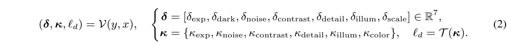
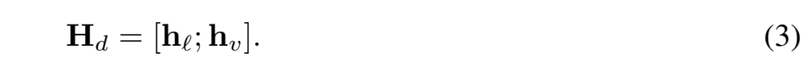
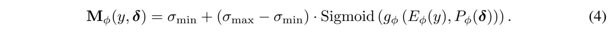
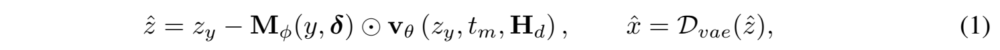

Super-resolution in the dark is spatially heterogeneous.
A dark low-resolution image is not uniformly corrupted. Some regions are dominated by underexposure and shadow noise, where visibility and structures are severely suppressed; other regions remain relatively reliable and should stay close to the observation. Applying the same restoration strength everywhere is therefore intrinsically risky: weak updates fail in shadows, while strong updates hallucinate textures or distort reliable details.
DeLang-SR revisits this problem from the perspective of flow dynamics. The predicted velocity determines the direction of restoration, while the update magnitude determines how far each latent location moves along that direction. DeLang-SR combines degradation-language conditions and image-specific visual evidence for direction steering, with a spatial update-strength field for magnitude control.
Core method
Direction steering and magnitude control.
DeLang-SR translates measurable low-light statistics into structured degradation language. The language-derived condition is complemented by visual degradation tokens extracted from the input image. Together, they steer the SD3 velocity field, while a degradation-aware spatial field controls the local update magnitude.
Figure 1. Pipeline of DeLang-SR. Degradation language and visual tokens form the fused condition to steer the velocity direction, while the continuous descriptor and local evidence predict the spatial update magnitude.
Degradation conditions from low-light statistics
Measurable statistics cover exposure, contrast, detail, darkness, shadow noise, illumination non-uniformity, and color shift. They are mapped into a continuous descriptor, discrete degradation labels, and a degradation-language prompt:

At inference time, degradation conditions are estimated from the low-quality input itself. The language prompt is treated as a coarse restoration intent rather than an oracle annotation. No high-quality reference, manual prompt, or oracle degradation label is required.
Language and visual evidence for direction steering
The degradation prompt provides a global restoration intent. The frozen SD3 text encoder produces the language embedding, while a visual token encoder extracts image-specific evidence from the RGB input, luminance, darkness, local contrast, and global low-light statistics. The two representations are concatenated:

The fused condition is injected into the SD3 flow transformer to steer the restoration direction.
Spatial update-strength field for magnitude control
The update-strength predictor combines local visual evidence with the continuous degradation descriptor. Its output is bounded and predicted at latent resolution, then broadcast along latent channels:

The field acts as a spatially varying Euler step-size. It controls the local integration magnitude along the predicted restoration velocity:

Quantitative results
Paired and no-reference evaluation.
We evaluate DeLang-SR on RELLISUR under the ×2 and ×4 settings, measuring fidelity, perceptual quality, exposure recovery, and color consistency. The tables below reproduce the complete comparisons from the paper.
DarkFace evaluates restoration on real nighttime images without paired high-quality references. The paper reports the distribution of four no-reference perceptual quality scores over 100 images.
The comparison panels below show the original paper's selected regions and method ordering. The top two examples use ×2 super-resolution; the bottom two use ×4.
The release provides the full DeLang-SR implementation, training configurations, inference, and per-image metric evaluation. The ×2 and ×4 adapter packages contain the transformer LoRA, VAE encoder LoRA, and DeLang control modules. The pretrained SD3 Medium base model is obtained separately under its original terms.
@inproceedings{gao2026delangsr,
title = {Decoupling Direction and Magnitude:
Language-Steered Flow Matching for
Super-Resolution in the Dark},
author = {Gao, Jiaxin and Yue, Ziyu and Liu, Yaohua and
Cui, Danchen and Zhao, Zhihui and Su, Zhixun},
booktitle = {Advances in Neural Information Processing Systems},
year = {2026}
}